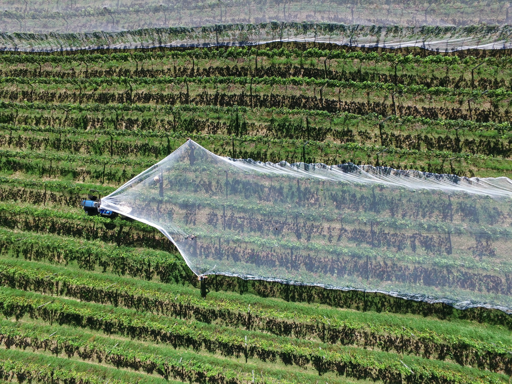

H&P Farm에 라이브러리에 오신것을 환영합니다. 현재를 통해 미래를 약속드리는 H&P Farm은 수직 농법 로보틱스 농법을 통한 농업의 완전자동화를
꿈꿉니다.
설립자 Hwang Inje와 Park Sungmin은 2021년 6월경 본 사업을 구상했고 현실에 옮겼습니다. 앞으로 농업은 전통적 방식을 넘어 미래식량산업에 이바지할 미래전략기술로
미래식량자원의 완전자동화를 현실화 계획에 있습니다. 그렇다면 스마트팜이란 무엇일까요? 아래에 링크와 동영상을 통해 스마트팜의 정의를 알아봅시다.
About Smartfarm?(문서)
